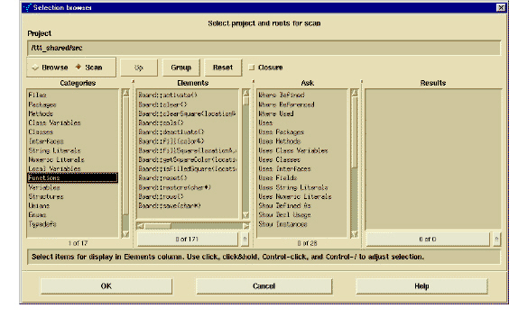

To perform a Dormant analysis
1 Do one of the following:
• From the Projects tab, select projects that encompass the full scope of your application’s source code and header files.
• From the Results window, select root entities that refer (directly or indirectly) to the greatest number of lower-level application entities.
2 Select Tools > Dormant from the DIScover menu.
This activates the Dormant notebook and the Selection browser window appears:
Note: The Project Browser page may not be the active page if you have already run Dormant during the current DIScover session.
3 Double-click your desired project.
Your project name appears in the project field (directly under the notebook tabs).
4 Click the Scan button.
This launches a second Selection browser window.

5 Select an entity type in the Categories column.
6 Select one or more entities in the Elements column.
7 If desired, select one or more root entities. If you select nothing, Dormant uses the entities you selected in Step 5 as the root entities.
8 Click OK at the bottom of the Selection browser window.
The Dormant Code Analysis dialog box appears.
This dialog box includes a progress indicator that displays the two phases of the analysis process and informs you of the number of entities included in the pending analysis.
9 Click OK to initiate the analysis.
Dormant begins the analysis, indicating its progress in the dialog box. During the first phase, Dormant parses the selected entities and creates a temporary database.
If two or more entities have the same name, Dormant aliases them, and for the purposes of the analysis, considers them to be the same entity (more specifically, when two or more entities have the same name, Dormant considers a reference to any one of the entities to be a reference to all of them). This does not delete or rename entities in your source code.
If alias designation occurs during the analysis, the Aliased Entities dialog box identifies the entities that are assigned an alias.
10 Click OK to continue the analysis.
During the second phase of the analysis, Dormant assesses the database created during the first phase. It identifies the relationships (if any) between the selected root entity and each entity in the database. The second phase takes considerably longer than the first phase.
Dormant stores the results of its analysis in groups named dormant-code-auto-n, where n is a number that starts at 0 and increments with each dormant code analysis.
The Groups application provides the easiest access to the results of the analysis.
11 From the DIScover window, select Tools > Group Manager.
12 In the Active Groups column, select dormant-code-auto-0 (or the desired dormant subsystem if you have done more than one analysis).
The Entities column displays every entity in the selected project that the root entities do not refer to, either directly or indirectly.